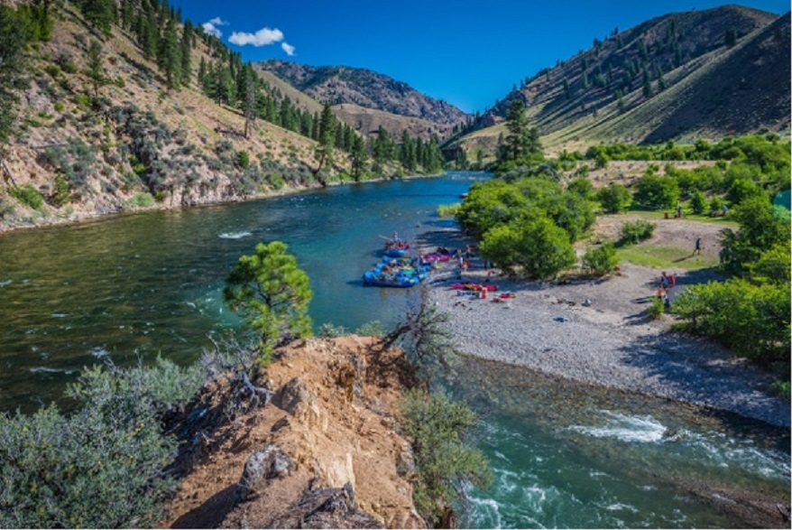

They range from class I-IV. The Salmon is one of the longest undammed rivers in the United States.
As a free flowing river the water is higher, faster, and colder in the early summer and lower, slower,
and warmer in the late summer.

Main Fork of the Salmon River, Idaho
This is the grand daddy of all canyons and the grand daddy of all river trips. You will never forget your visit to the Grand Canyon.
Grand Canyon river rafting combines world-class whitewater with breathtaking scenery to make one truly unforgettable river experience. The canyon is filled not only with exhilarating whitewater rapids, but with side canyons and ancient indian ruins accessible only by river.